File: 000060.gt.txt (if the image is defective, simply delete all Arabic text and the line will be excluded)
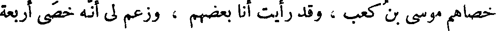
خصاهم موسى بن كعب ، وقد رأيت أنا بعضهم ، وزعم لي أنه خصى أربعة
File: 000061.gt.txt (if the image is defective, simply delete all Arabic text and the line will be excluded)
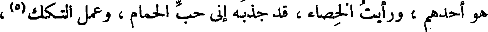
هو أحدهم ، ورأيت الخصاء ، قد جذبه إلى حب الحمام ، وعمل التكك(5) ،
File: 000062.gt.txt (if the image is defective, simply delete all Arabic text and the line will be excluded)
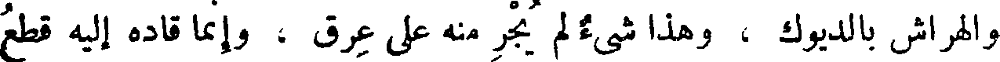
والهراش بالديوك ، وهذا شيء لم يجر منه على عرق ، وإنما قاده إليه قطع
File: 000063.gt.txt (if the image is defective, simply delete all Arabic text and the line will be excluded)

ذلك العضو .
File: 000064.gt.txt (if the image is defective, simply delete all Arabic text and the line will be excluded)
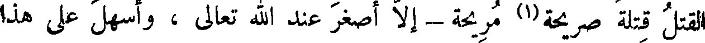
القتل قتلة صريحة(1) مريحة - إلا أصغر عند الله تعالى ، وأسهل على هذا
File: 000065.gt.txt (if the image is defective, simply delete all Arabic text and the line will be excluded)
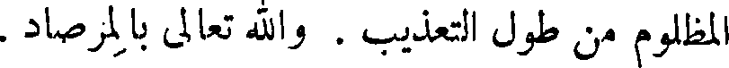
المظلوم من طول التعذيب . والله تعالى بالمرصاد .
File: 000066.gt.txt (if the image is defective, simply delete all Arabic text and the line will be excluded)
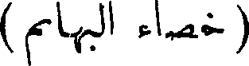
( خصاء البهائم )
File: 000067.gt.txt (if the image is defective, simply delete all Arabic text and the line will be excluded)
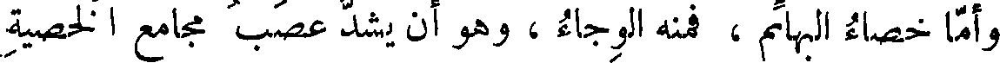
وأما خصاء البهائم ، فمنه الوجاء ، وهو أن يشد عصب مجامع الخصية
File: 000068.gt.txt (if the image is defective, simply delete all Arabic text and the line will be excluded)
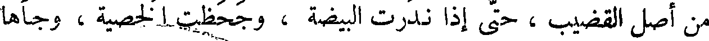
من أصل القضيب ، حتى إذا ندرت البيضة ، وجحظت الخصية ، وجأها
File: 000069.gt.txt (if the image is defective, simply delete all Arabic text and the line will be excluded)
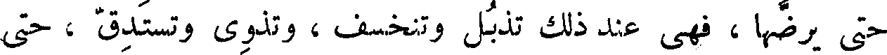
حتى يرضها ، فهي عند ذلك تذبل وتنخسف ، وتذوي وتستدق ، حتى
File: 000070.gt.txt (if the image is defective, simply delete all Arabic text and the line will be excluded)
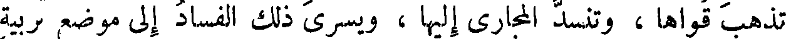
تذهب قواها ، وتنسد المجاري إليها ، ويسري ذلك الفساد إلى موضع تربية
File: 000071.gt.txt (if the image is defective, simply delete all Arabic text and the line will be excluded)
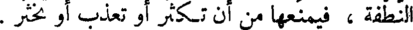
النطفة ، فيمنعها من أن تكثر أو تعذب أو تخثر .
File: 000072.gt.txt (if the image is defective, simply delete all Arabic text and the line will be excluded)
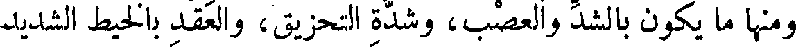
ومنها ما يكون بالشد والعصب، وشدة التحزيق، والعقد بالخيط الشديد
File: 000073.gt.txt (if the image is defective, simply delete all Arabic text and the line will be excluded)
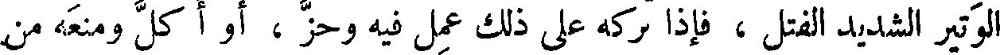
الوتير الشديد الفتل ، فإذا تركه على ذلك عمل فيه وحز ، أو أ كل ومنعه من
File: 000074.gt.txt (if the image is defective, simply delete all Arabic text and the line will be excluded)
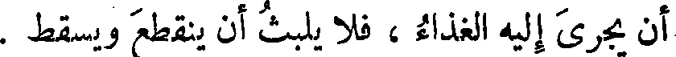
أن يجزي إليه الغذاء ، فلا يلبث أن ينقطع ويسقط .
File: 000075.gt.txt (if the image is defective, simply delete all Arabic text and the line will be excluded)
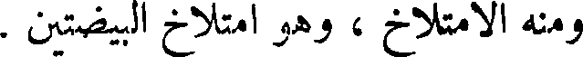
ومنه الامتلاخ ، وهو امتلاخ البيضتين .
File: 000076.gt.txt (if the image is defective, simply delete all Arabic text and the line will be excluded)
( خصاء الناس )
File: 000077.gt.txt (if the image is defective, simply delete all Arabic text and the line will be excluded)

فأما خصاء الناس ، فإن للخاصي حديدة مرهفة محماة ، وهي الحاسمة،
File: 000078.gt.txt (if the image is defective, simply delete all Arabic text and the line will be excluded)
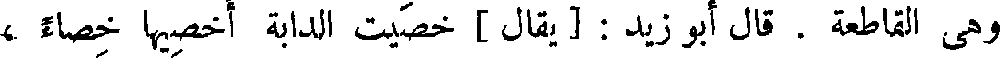
وهي القاطعة. قال أبو زيد: يقال خصيت الدابة أخصيها خصاء،
File: 000079.gt.txt (if the image is defective, simply delete all Arabic text and the line will be excluded)
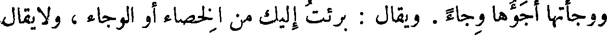
ووجأتها أجؤها وجاء . ويقال : برئت إليك من الخصاء أو الوجاء ، ولا يقال
File: 000080.gt.txt (if the image is defective, simply delete all Arabic text and the line will be excluded)
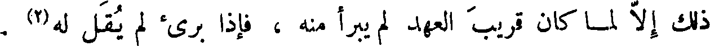
ذلك إلا لما كان قريب العهد لم يبرأ منه ، فإذا برئ لم يقل له(2) .
File: 000081.gt.txt (if the image is defective, simply delete all Arabic text and the line will be excluded)
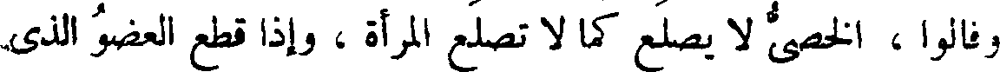
وفالوا ، الخصي لا يصلع كما لا تصلع المرأة ، وإذا قطع العضو الذي
File: 000082.gt.txt (if the image is defective, simply delete all Arabic text and the line will be excluded)
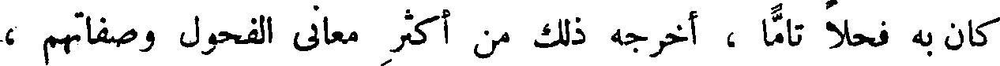
كان به فحلا تاما، أخرجه ذلك من أكثر معاني الفحول وصفاتهم ،
File: 000083.gt.txt (if the image is defective, simply delete all Arabic text and the line will be excluded)
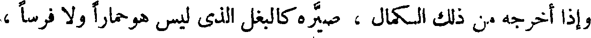
وإذا أخرجه من ذلك الكمال ، صيره كالبغل الذي ليس هو حمارا ولا فرسا ،
File: 000084.gt.txt (if the image is defective, simply delete all Arabic text and the line will be excluded)
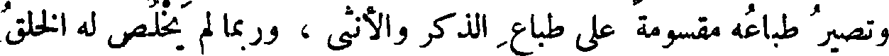
وتصير طباعه مقسومة على طباع الذكر والأنثى ، وربما لم يخلص له الخلق
File: 000085.gt.txt (if the image is defective, simply delete all Arabic text and the line will be excluded)
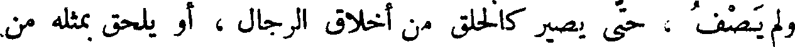
ولم يصف ، حتى يصير كالخلق من أخلاق الرجال ، أو يلحق بمثله من
File: 000086.gt.txt (if the image is defective, simply delete all Arabic text and the line will be excluded)
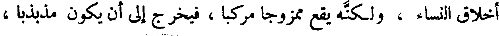
أخلاق النساء ، ولكنه يقع ممزوجا مركبا ، فيخرج إلى أن يكون مذبذبا ،
File: 000087.gt.txt (if the image is defective, simply delete all Arabic text and the line will be excluded)

لا إلى هؤلاء ولا إلى هؤلاء . وربما خرجت النتيجة وما يولده التركيب ،
File: 000088.gt.txt (if the image is defective, simply delete all Arabic text and the line will be excluded)
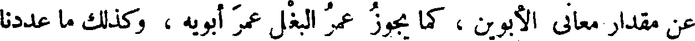
عن مقدار معاني الأبوين ، كما يجوز عمر البغل عمر أبويه ، وكذلك ما عددنا
File: 000089.gt.txt (if the image is defective, simply delete all Arabic text and the line will be excluded)

( طلب النسل )
To Save: `Ctrl+s`, make sure to choose `Webpage, complete`!